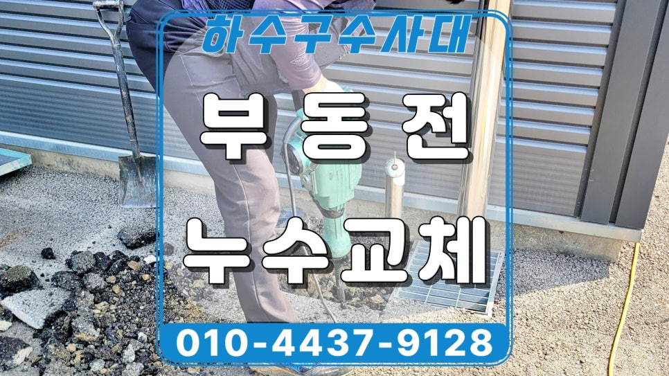
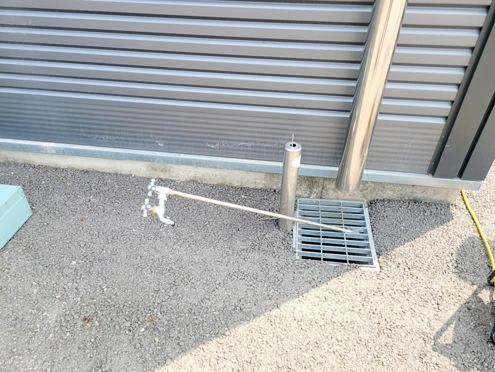
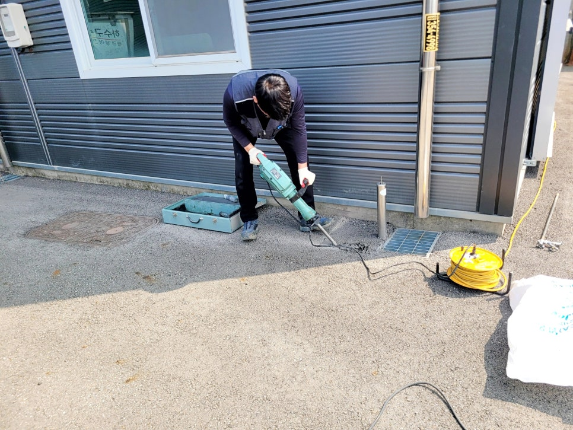
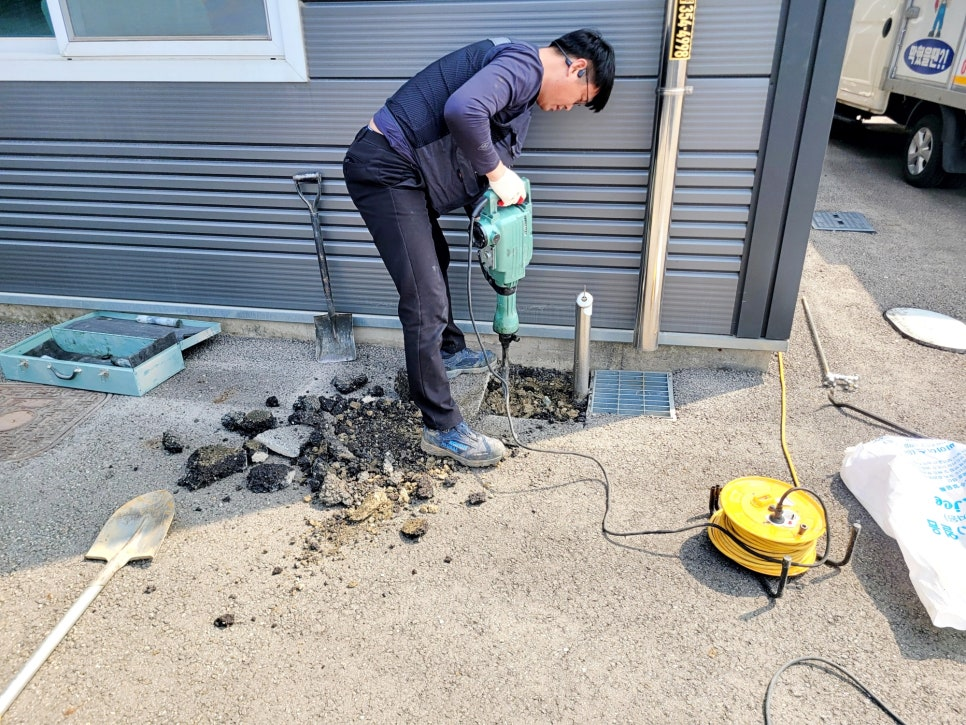
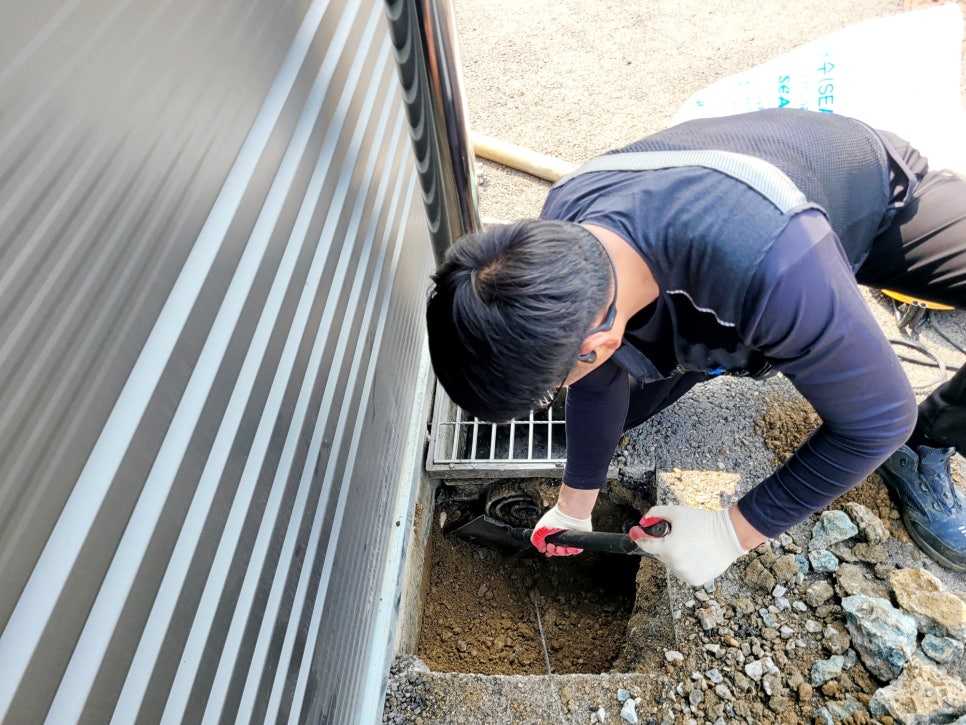
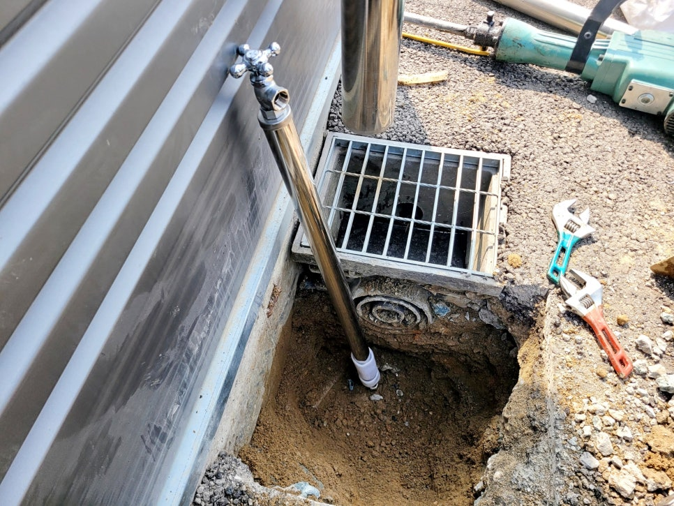
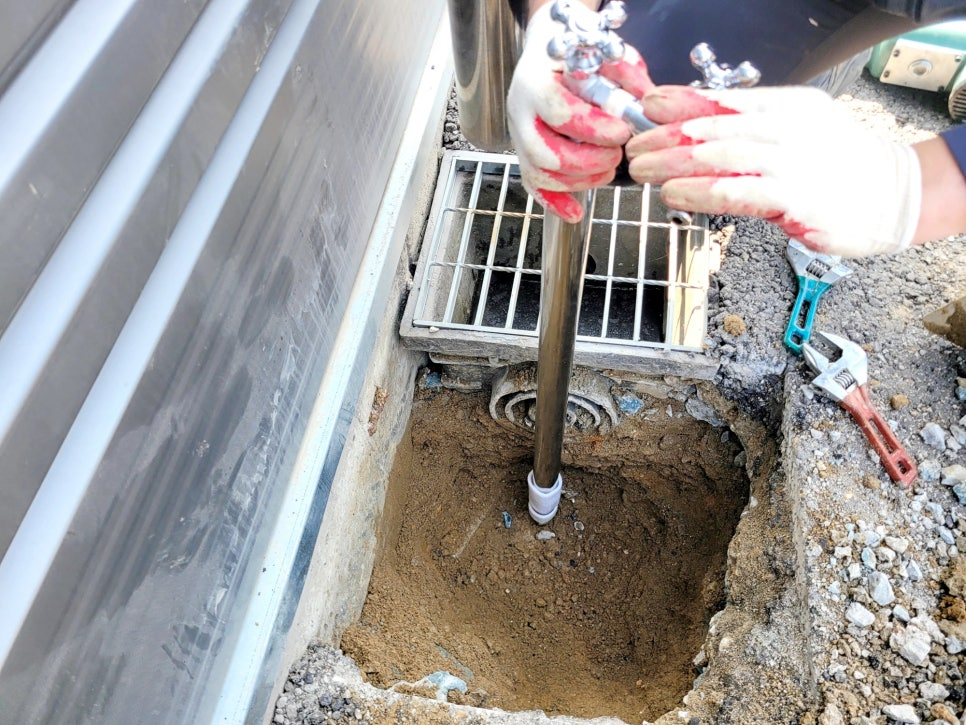

🏠 화성시 봉담 부동전누수 교체, 공장 수도꼭지 물샘 수리
화성 봉담 하수구막힘 전문 시공 후기

📋 작업 개요
- 위치: 화성 봉담, 봉담, 화성
- 서비스 유형: 하수구막힘, 누수수리
- 작업 일시: 2026. 4. 20. 14:53
- 업체명: 하수구수사대 (010-5615-2118)
🔍 문제 상황
화성시 봉담읍 부동전누수 교체전문,
공장 외부 수도꼭지 물샘 수리 후기
안녕하세요.
화성 봉담읍 부동전누수 교체와
외부 수도꼭지 물샘 수리 전문업체
하수구수사대입니다.
외부 수도꼭지 물샘 수리를 위해
공장 현장에 방문한 사례인데요.
수도꼭지 부속이 파손된 상태
이번 현장은 부동전 상단으로 물이
흘러나오고 있어 수도요금 부담까지
커질 수 있었던 곳이었습니다.
처음 화성시 봉담 부동전누수 교체
현장에 도착했을 때부터
수도 주변 바닥이 젖어 있었고,
상단 부속 쪽 이상 가능성이
크게 보이던 상황이었습니다.
화성시 봉담 부동전누수 교체 현장
1. 위치 : 화성시 봉담읍
2. 문제 : 외부 부동전 수도꼭지 물샘

🔎 원인 분석
💡 전문가 진단: 화성시 봉담읍 부동전누수 교체전문,공장 외부 수도꼭지 물샘 수리 후기
3. 원인 : 내부 부속 노후화로 파손됨
4. 조치 : 굴착 후 새 부동전으로 교체함
곧바로 상태를 점검해 보니
부동전 내부 부속이 이미 파손돼
부분 수리로는 오래 버티기 어려운
상태라는 점이 드러났는데요.
고객님께 현재 상태와 재사용이
어려운 이유를 자세히 설명드린 뒤
새 스테인리스 부동전으로
교체 작업을 진행했습니다.
1. 파손 부속 철거와 굴착 작업
화성시 봉담 부동전 교체 작업 전
주변은 필요한 범위만 최소한으로
커팅해 굴착했고, 매설된 수도관에
손상이 가지 않도록 바닥 철거도
매우 신중하게 이어갔습니다.
기존 부동전을 분리한 뒤에는
하부 연결 상태까지 함께 살펴보며
새 제품이 안정적으로 설치될 수 있게
기초 구간을 반듯하게 만들었습니다.
스테인리스 새 부동전으로 교체 진행 중

🔧 작업 과정
2. 새 부동전 설치와 연결 보강
이후 스테인리스 부동전을 세우고
연결부 누수가 생기지 않도록
체결 부위를 꼼꼼하게 맞춘 뒤
수평도 함께 잡아드렸습니다.
이번 봉담읍 공장 부동전누수 현장의
핵심은 단순 교체가 아니라
겨울철 동파 방지까지
함께 반영했다는 점인데요.
기존에는 보온 대책이 없었지만
이번에는 보온재를 적용해
재시공을 마무리했습니다.
흙 복개와 주변 마감도 진행해
외부 사용에 불편이 없도록 했고,
배수로 주변 정리까지 마친 뒤
다시 계량기함의 밸브를 열고
정상적인 수압까지 꼼꼼하게
살폈습니다.
그리고 이전보다 안정적인 수압으로
물이 나오는 모습을 지켜볼 수
있었답니다.
부동전 교체 수리를 마무리하며
동파 방지 보온 작업까지 마친 상태
마감 후 모습은 훨씬 안정적이었고
대표님께서도 동파 방지 시공까지
들어간 결과를 보신 뒤
만족도가 높으셨는데요.
부동전은 외부에 노출되는 만큼
관리 시기를 놓치면 바닥 물샘과
수도요금 과다 청구로 이어지기
쉬운 설비입니다. 이번 현장처럼
원인에 맞게 교체와 보온까지
함께 진행하는 방식이 더 적절합니다.


✅ 작업 완료
지금 만약 부동전 주변에서 물기가
발견되거나 수압이 약해졌다면
미루지 마시고 곧바로 설비전문가
하수구수사대를 불러주십시오.
이상으로
'화성시 봉담 부동전누수 교체'
수리 후기를 마치겠습니다.
감사합니다.
#화성봉담읍부동전누수교체 #외부수도꼭지물샘수리 #봉담부동전교체 #화성부동전누수 #봉담읍수도꼭지수리 #외부수도누수 #공장부동전교체 #스테인리스부동전설치 #동파방지시공 #하수구수사대




⚠️ 베란다 누수 및 방수 관리 방법
- ✅ 비가 많이 올 때 창틀 주변이나 아래층 천장에 얼룩이 생기는지 정기적으로 확인해 보세요.
- ✅ 우수관 주변 실리콘 마감이 들뜨거나 깨진 틈새가 있는지 손상 여부를 수시로 체크하세요.
- ✅ 베란다 바닥 타일의 줄눈(메지)이 소실되면 그 틈으로 물이 침투하여 누수가 유발됩니다.
- ✅ 누수 의심 증상 발견 시 방치하면 아래층 손실이 커지므로 즉시 전문가의 진단을 받으십시오.
💡 핵심 정리
- 확실한 장비 작업(내시경 점검 및 샤프트 스케일링)으로 원인을 뿌리 뽑습니다.
- 작업 후 1년 이내에 동일한 부위 재발 시 100% 무상 A/S 서비스를 보장합니다.
- 서울 · 경기 · 인천 전 지역에 24시간 언제든 긴급 출동할 수 있도록 항시 대기 중입니다.
❓ 자주 묻는 질문 (FAQ)
🚨 화성 봉담 하수구막힘 문제로 고민이신가요?
정확한 원인 진단과 확실한 시공으로 재발 없는 해결을 약속드립니다.
24시간 긴급 출동 | 서울 · 경기 · 인천 전지역 | 1년 내 재발 시 무상 A/S